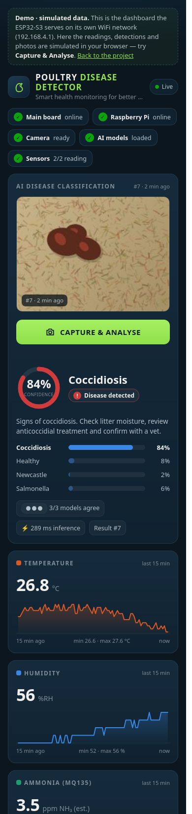
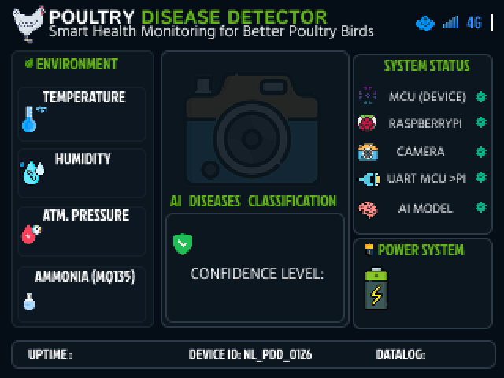

A three-board embedded system. A Raspberry Pi photographs the droppings and classifies them with an ensemble of three INT8 neural networks. An ESP32-S3 main board reads the shed's temperature, humidity and ammonia, shows everything on a 2.8″ touch display, and serves a live dashboard to any phone over its own WiFi — no internet needed.

Every capture runs as one locked cycle: while it is running, further presses are ignored, so a result always belongs to exactly one photo.
The button on the detector, the phone dashboard or the main-board console starts a capture.
Camera Module 3 Wide with autofocus, 2304 × 1296, centre crop of what lies under the lens.
MobileNetV2, NASNetMobile and ShuffleNetV2 (INT8, LiteRT) vote, weighted by their accuracy.
Verdict, all four probabilities and a 112 × 84 JPEG go to the main board over a checksummed UART link.
The CYD touch display and every connected phone show the photo, verdict, confidence and advice.
Each board does one job. The links are plain-text frames with an NMEA-style XOR checksum, so every byte on the wire can be read in a serial monitor while debugging.
Everything runs on 3.3 V logic, so the links need no level shifters. The pin map avoids the ESP32-S3's strapping, flash, octal-PSRAM and USB pins.
N16R8 — 16 MB flash, 8 MB octal PSRAM. Main board: both UART links, sensors, WiFi access point and web server.
Camera, capture button and the AI ensemble. Runs headless as a systemd service and recovers from a hung camera on its own.
IMX708 with autofocus. 2304 × 1296 binned mode; the centre crop matches what the models were trained on.
ESP32-2432S028R with ILI9341 and resistive touch. Decodes the result photo itself with LVGL's bundled TJpgDec.
Shed temperature and humidity, read every 2 s. A failed read shows as “--” instead of a stale number.
Ammonia estimate from the datasheet NH₃ curve, with a one-time clean-air calibration saved in flash.

| Function | ESP32-S3 | Connects to |
|---|---|---|
| Debug / flashing | GPIO43 / 44 | CH343 USB (UART0) |
| Raspberry Pi link | GPIO17 TX / 18 RX | Pi pins 10 / 8, GND pin 6 |
| CYD link | GPIO41 TX / 42 RX | CYD GPIO35 / 27 |
| DHT11 data | GPIO13 | sensor, 3.3 V |
| MQ135 AO | GPIO7 | module, 3.3 V |
| Relay IN | GPIO3 | held off (reserved) |
| Status LED | GPIO48 | on-board RGB |
Each model gives four class probabilities; the ensemble averages them, weighted by each model's validation accuracy. The result also reports how many of the three models picked the same class and flags anything under 60 % confidence for a re-capture.
Measured on the training notebook's validation split, which was also used to set the ensemble weights, so the ensemble figure is slightly optimistic. A retrained six-model ensemble reached 97.8 % — see the roadmap.
| Stage | Detail |
|---|---|
| Capture | 2304 × 1296, autofocus cycle, 15 s timeout |
| Crop | centre square, 80 % of the frame height |
| Resize | 224 × 224, nearest-neighbour (as in training) |
| Scale | pixels / 255 |
| Models | MobileNetV2 · NASNetMobile · ShuffleNetV2, INT8 |
| Runtime | LiteRT (TFLite), 4 threads |
| Measured | 280–297 ms for all three on a Pi 3B+ |
| Output | label, confidence, 4 probabilities, agreement, photo |
The ESP32-S3 runs an open access point called PoultryDetector with a captive-portal DNS, so phones show the dashboard as soon as they join. Below is the same page running on simulated data — press Capture & Analyse.
Both links use one frame per line with an XOR checksum of the bytes between $ and
*. Each protocol lives in one header that is kept identical on both ends.
$PDD,HB,12,1,1,445*40 heartbeat, every 5 s $PDD,BUSY,13,BTN*3B capture started $PDD,RES,13,HEALTHY,91,4,91,2,3,OK,3,285*42 $PDD,IMG,13,112,84,2156*03 photo follows $PDD,IMD,13,0,<64 base64 chars>*CS 48-byte chunks $PDD,CAP*2E main board → Pi
$CYD,TEL,26.1,49.5,-,4.4,-,0,HEALTHY,91,
13,1,1,1,0,3725*71
temp, hum, pres, NH3, batt, chg,
disease, conf, seq, pi, cam, model,
busy, uptime ("-" = no value)
$CYD,IMG / $CYD,IMD the photo, forwarded